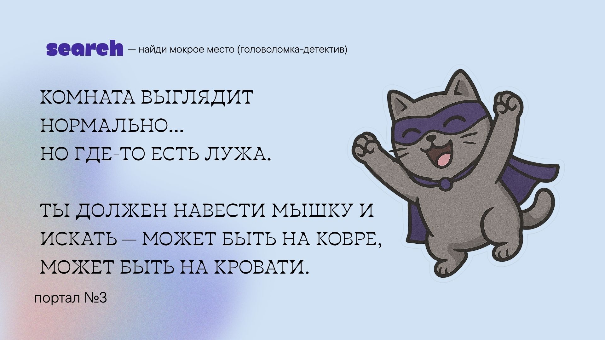
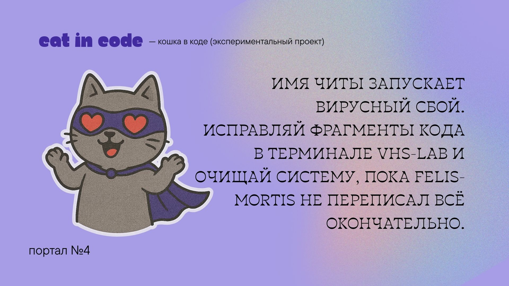
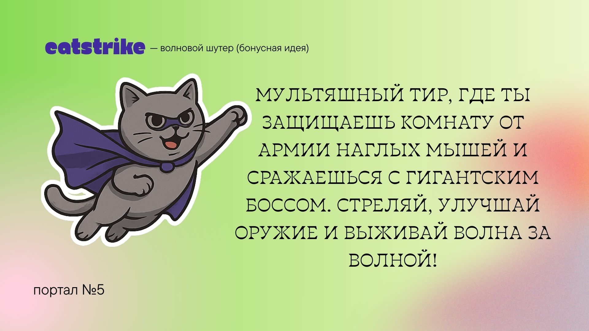
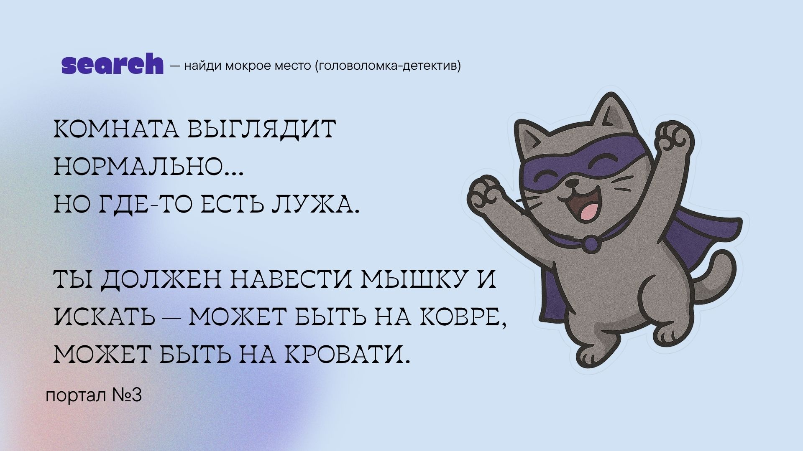
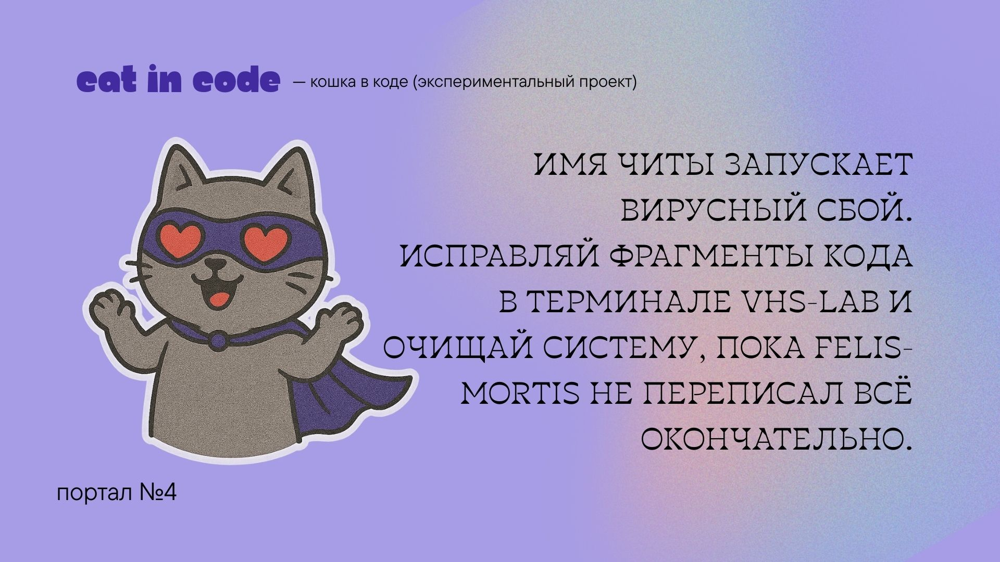
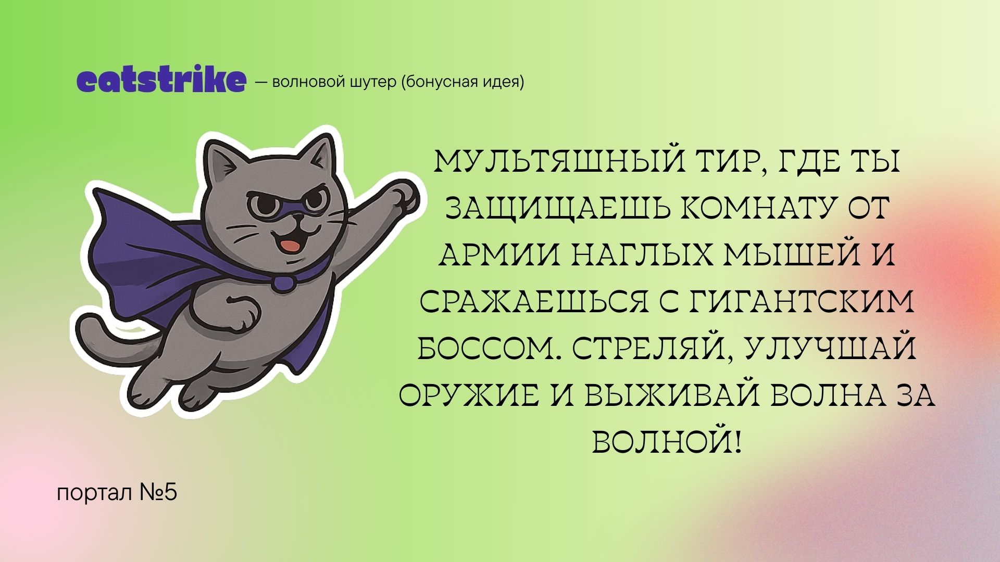

Привет! Меня зовут Чита. Я ранимая и нежная кошка, или, как говорит моя мама, "владелица тонкой душевной натуры." Когда маме было пятнадцать, она брала породистых кошек с Авито «за бесплатно», а потом продавала их за деньги. Одной из тех кошек оказалась я. Мне повезло — когда маму обманули мошенники, которые якобы хотели меня купить, она решила, что это знак судьбы, и я должна остаться жить с ней. Но мир не так прост (и, как говорит мама, «карма существует»). Теперь каждый раз, когда я нервничаю — а нервничаю я часто — я оставляю мокрые следы на диванах, кроватях и ковриках. Мама очень переживала и водила меня к разным врачам, но все как один говорили, что я здорова, и выписывали успокоительные, которые мне, честно говоря, не помогают. В общем, со мной всё хорошо. Просто я часто нервничаю. Когда у мамы плохое настроение — я всегда переживаю вместе с ней и стараюсь её поддержать. Ведь, как известно, для кошек запах — лучший способ проявить заботу. Если бы удалось посчитать стоимость всех наших походов к ветеринару, количество испорченных диванов и матрасов, мама, наверное, уже смогла бы купить целых два новых Макбука... Поможешь мне проявить больше заботы?
 




